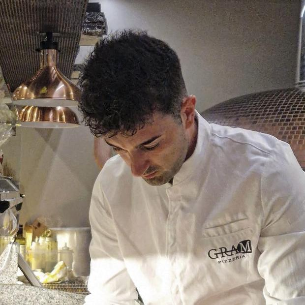

La squadra
Chi c'è dietro il banco.
Una pizzeria è quattro o cinque persone che ripetono gli stessi gesti trecento sere l'anno. Vale la pena sapere chi sono.

[Nome del fondatore]
Fondatore e pizzaiolo
Pesa l'impasto ogni mattina prima che apra chiunque altro. Il nome della pizzeria è una sua ossessione, non un'idea di marketing.
Il secondo al banco. Ritratto quadrato, luce del forno da destra, mani in primo piano.
[Nome]
Al banco
Due righe vere: da dove viene, da quanto è qui, cosa gli riesce meglio.
Chi accoglie in sala. Ritratto prima del servizio, sala ancora vuota.
[Nome]
In sala
È la voce che risponde su WhatsApp: metterci una faccia cambia il tono di tutte le prenotazioni.
Al forno. Pala in mano, 1/250 minimo per fermare il gesto.
[Nome]
Al forno
Novanta secondi a pizza, per cinque ore di fila. È il mestiere più fisico del locale.
Il locale
Un forno, un banco di marmo, dei tavoli fuori.
Il dehors al tramonto, tavoli apparecchiati, luce calda naturale. Orizzontale 4:3.
La sala con il servizio già avviato, gente ai tavoli, mossa quanto basta.
Il forno acceso visto di tre quarti: è l'elemento più riconoscibile del locale.
Il banco visto dal posto del cliente, all'altezza degli sgabelli.
La filiera
Fornitori che possiamo chiamare la mattina e vedere il pomeriggio.
Il fiordilatte da Agerola, il cacioricotta dai pascoli del Cilento interno, le alici lavorate con la menaica, i fichi bianchi DOP, l'olio dei frantoi qui sopra. Non è marketing territoriale: è la ragione per cui una carta corta funziona.
Una cosa che facciamo
La pizza sospesa.
Come il caffè sospeso, ma con la margherita. Ne pagate una in più quando venite e resta segnata sulla lavagna dietro il banco: qualcuno passerà a ritirarla, senza doverlo spiegare a nessuno.
A fine mese scriviamo su Instagram quante ne sono state lasciate e quante ritirate. Nient'altro.